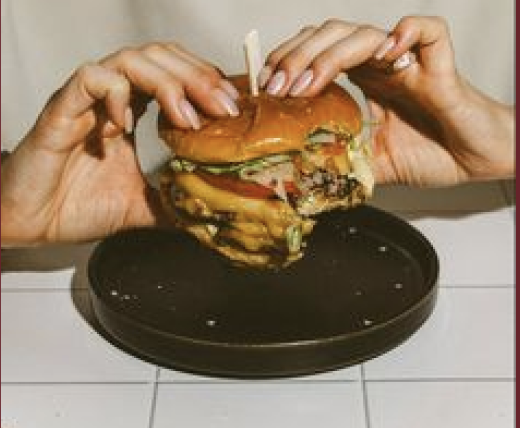
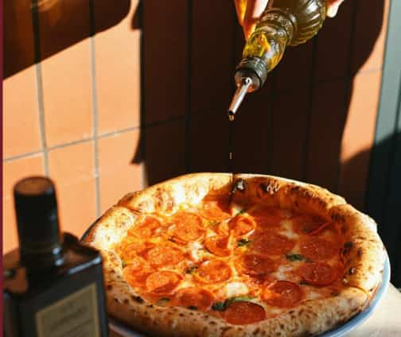
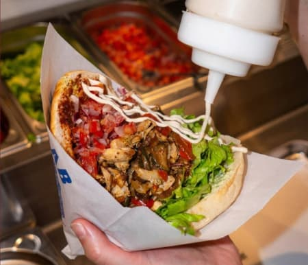

Hos BITE får du saftige burgere, sprøde pommes frites og en afslappet stemning. En burger-menu med pommes
frites
og
sodavand koster kun 89 kr., så du kan spise lækkert uden at sprænge budgettet.
Prisniveau: ca. 89 kr. pr. menu
Amagerbrogade 142, 2300 København S

BASILICO byder på klassisk italiensk mad som pizza og pasta i hyggelige omgivelser. Dagens pasta koster
omkring
85 kr.,
hvilket gør det nemt at få italiensk mad til en budgetvenlig pris.
Prisniveau: ca. 85–120 kr. pr. ret
Øresundsvej 58, 2300 København S

Hos KRYDDER kan du få saftig kebab, friske grøntsager og lækre dressinger. En kebab-menu med pommes
frites og
sodavand
koster omkring 79 kr. — perfekt til et hurtigt og billigt måltid.
Prisniveau: ca. 79 kr. pr. menu
Englandsvej 76, 2300 København S